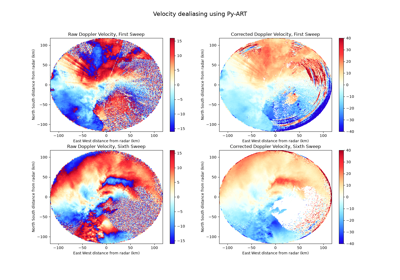
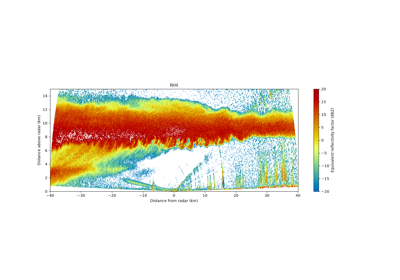
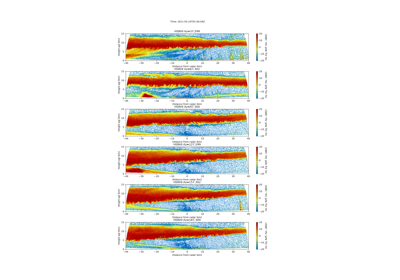
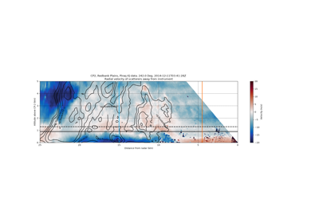
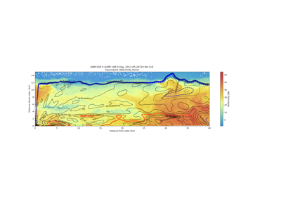
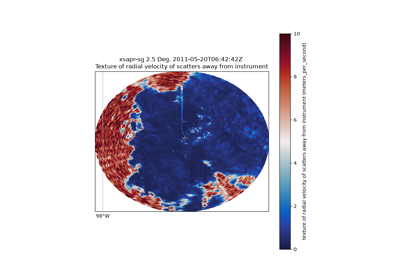

Example Gallery#
The files used in these examples are available for download.
Moment correction examples#
Performing radar moment corrections in antenna (radial) coordinates.

Dealias doppler velocities using the Region Based Algorithm
Input/Output Examples#
Reading/writing a variety of radar data using Py-ART.
Mapping examples#
Mapping one or multiple radars from antenna coordinates to a Cartesian grid.
Plotting examples#
Plotting real world radar data with Py-ART.
Contributing a gallery example#
Every plot_*.py in examples/ is executed at documentation build time
by Sphinx-Gallery, so examples must satisfy a strict contract. Follow these
rules or the docs build will fail:
Run with no arguments.
python plot_my_example.pymust succeed on its own. Keep asys.argvfallback only for optional real files.Do not block on the network. When data is required, synthesise it with helpers from
pyart.testing(e.g.pyart.testing.make_empty_ppi_radar()) instead of downloading it. The CI docs build runs withPYART_DOCS_OFFLINE=1.Finish quickly. Target under 30 seconds and emit at most one figure.
Use the gallery header. Start the module docstring with a title underlined by
===, as in the existing examples.
A lightweight CI step (Gallery example contract in
.github/workflows/ci.yml) runs each example with no arguments and no
network, so a broken contract is reported in seconds rather than after the
full docs job.

Create a multiple panel RHI plot from a CF/Radial file

Create a multiple panel RHI plot from a CF/Radial file

Create an RHI plot with reflectivity contour lines from an MDV file

CINRAD X/S/C-band dual-polarization animation example

Create an RHI plot with reflectivity contour lines from an MDV file
Retrieval Examples#
Retrievals from various radars, such as additional fields or subsets of the data.
Xradar Examples#
Examples of using Xradar with Py-ART to accomplish different tasks.

Dealias Radial Velocities Using Xradar and Py-ART